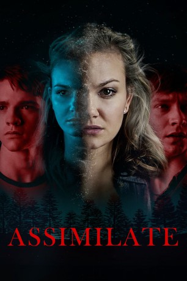

#11830 Life Snatcher
Alternativ: Assimilate (Englischer Titel)
 
 IMDB-Wertung: 5.7 / 10
IMDB-Wertung: 5.7 / 10  Metascore: 0
Metascore: 0 
Three friends making a web series about their town discover that their neighbors are being killed and replaced by creatures who are perfect copies of their victims.
Jahr: 2019
Dauer: 93 Minuten
FSK: 16
Land: USA Studio: Gravitas VenturesTonspuren: DTS - ,
Untertitel: Deutsch,
Auflösung: 1080p (1920x1080) Größe: 4730 MB
Genre: Thriller, Horror, Sci-Fi
Regisseur: John Murlowski
Drehbuch: John Murlowski, Steven Palmer Peterson
Soundtrack: Sven Faulconer
Darsteller:
- Joel Courtney als Zach Henderson
- Calum Worthy als Randy Foster
- Andi Matichak als Kayla Shepard
- Katherine McNamara als Hannah
 Cam Gigandet als Deputy Josh Haywood
Cam Gigandet als Deputy Josh Haywood- Mason McNulty als Joey Shepard
- Terry Dale Parks als Pastor Greg
- Vito Viscuso als Larry Shepard
- Jennifer Pierce Mathus als Beth Shepard
- Tonetta Weaver als Mrs. Henderson
- Amye Gousset als Mrs. Bissette
- Kyler Porche als Dylan
- Michael Martin als Henry
- Deanna Meske als Replaced Mrs. Lee
- Amber Townsend als Julia
- Emma Frances Burge als Child of Replicate (uncredited)
- Jessica Medina als Replicate (uncredited)
- Jered Meeks als Replicate (uncredited)
- John Murlowski als Mr. Fritts (uncredited)
- Allison Pittman als Randy's Mother (uncredited)
- Deanna Rashell als Mrs. Watson - Replaced Parent (uncredited)
- Lindsey Reimann als Replicate (uncredited)
- Christina Michelle Williams als Replicate (uncredited)
- Cotton Yancey als Replicate (uncredited)
- Kevin Remington als Mr. Henderson
- Megan Fay als Ashley
- Byron Hughes als Sheriff
- Conner Myers als Screaming Boy
- Michelle Feynman als Mrs. Fritts
- Richard B. Adams als Replicate (uncredited)
- J.C. Barber als Replicate (uncredited)
- Jacob Craig Bullock als Mrs. Lee's Son (uncredited)
- Stuart Greenwell als Replicate (uncredited)
- Pixie Hankins als Girl on Gurney (uncredited)
- Jake Harvey als Replicate (uncredited)
- Martin Ross Henne als Replicate (uncredited)
- Rhonda Jennings als Replicate (uncredited)
- Shawn Steven Jones als Replicate (uncredited)
- Jonathan McKinnon als Replicate (uncredited)
- Hugh Daniel Porter als Replicate (uncredited)
- Stacy Stephen Purser als Replicate (uncredited)
- Martin Sprock als Mailman (uncredited)
- Calvin Williams als Replicate (uncredited)
- Ryan Wiltshire als Replicate (uncredited)
Datei: X:\2019(G-M)\Life Snatcher (2019, FSK16, 1920x1080).mkv seit 01.10.2019
Festplatte: HD 2018(G-Z)-2019(A-Z)
 Es gibt insgesamt 47 Filme in der Gruppe '2019(G-M)'
Es gibt insgesamt 47 Filme in der Gruppe '2019(G-M)'